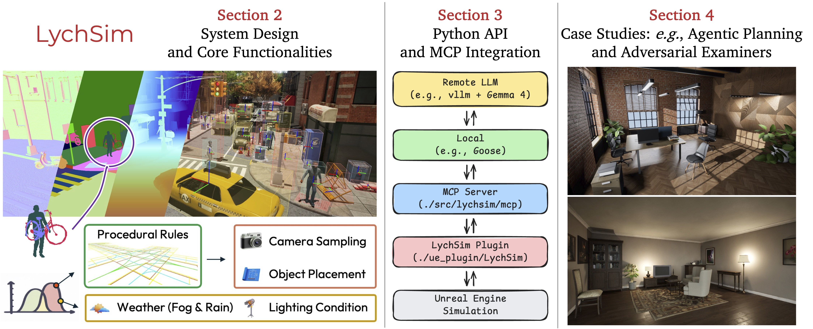
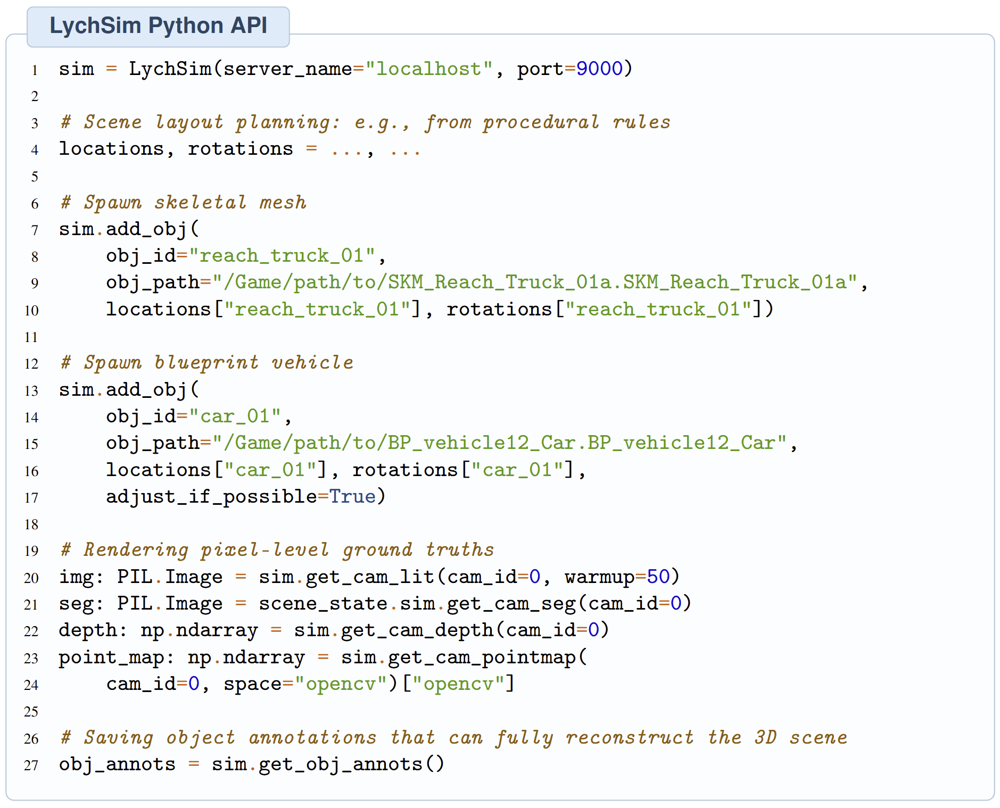
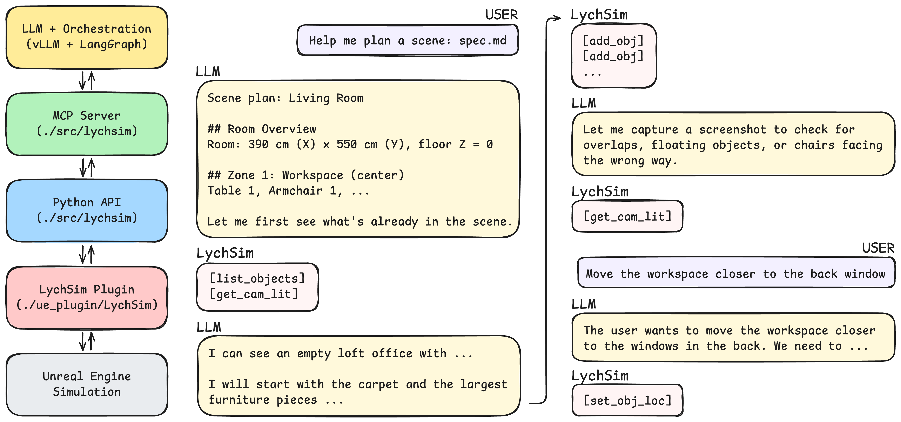
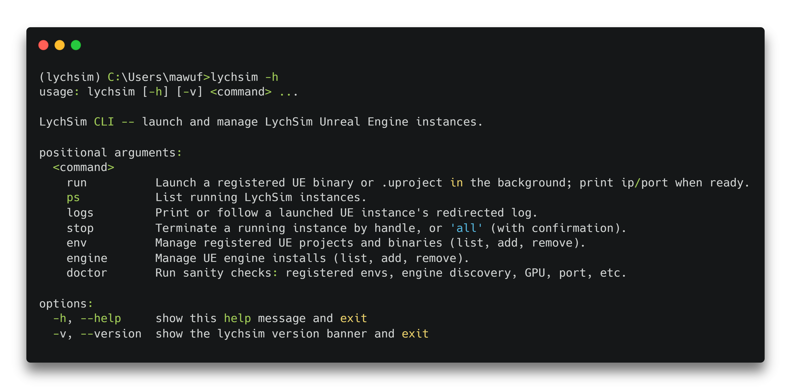
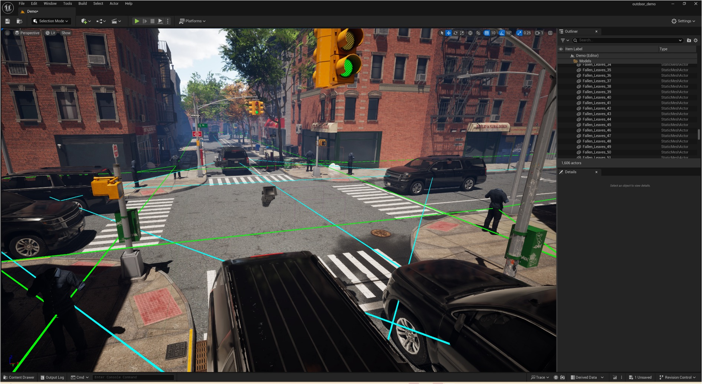
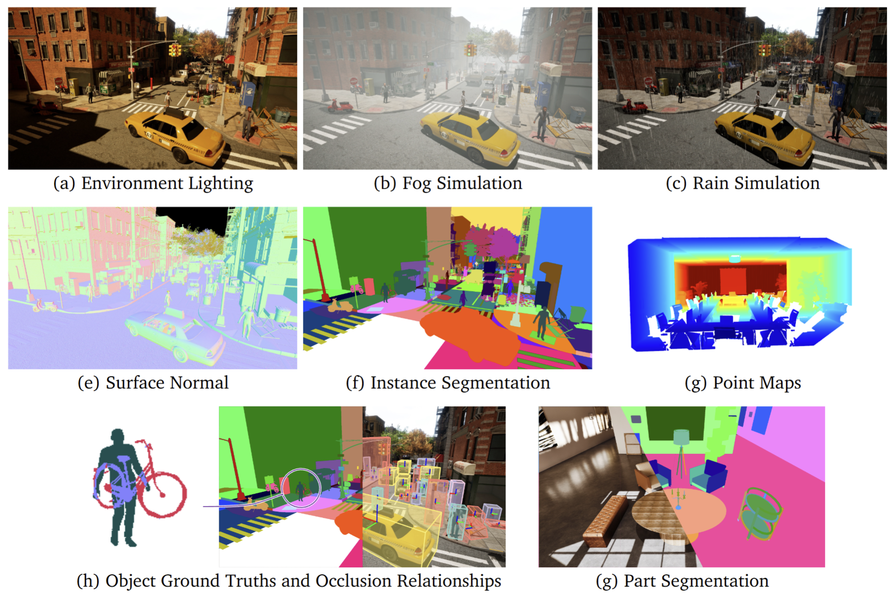
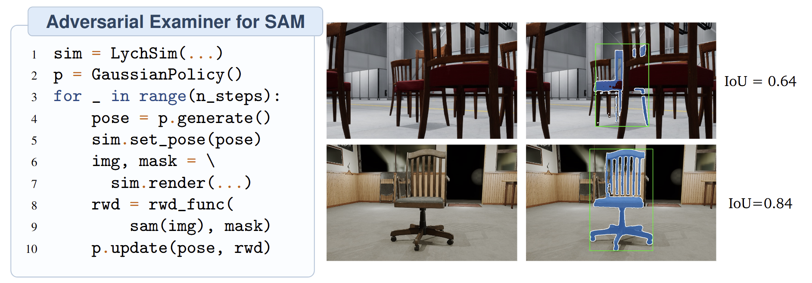
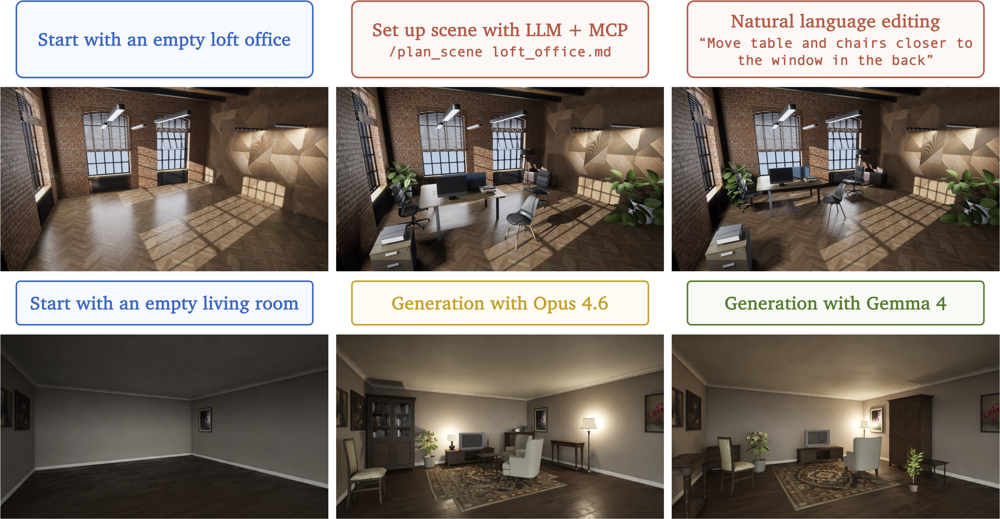

LychSim#
LychSim is a controllable, interactive simulation framework on Unreal Engine 5 – a streamlined Python API, a procedural data pipeline with rich 2D / 3D ground truth, and native MCP integration for reasoning agentic LLMs.
Quick Start · Python API · MCP · CLI · Data Annotations · Case Studies · Citation
{kind=link}

LychSim: a controllable, interactive simulation framework for computer vision research.#
Quick Start#
Try LychSim with our Quick Start Package – without an Unreal Engine 5 installation:
pip install git+https://github.com/wufeim/LychSim.git
lychsim env add /path/to/demo
lychsim run demo
For full UE5 setup or building scenes from source, see the installation guide.
Python API#
LychSim provides a Pythonic wrapper that abstracts away UE5 and C++ engine complexities. Researchers can spawn objects, query annotations, and capture pixel-accurate ground truth in a few lines.
{kind=link}

The Python API provides a unified interface for spawning diverse asset types and rendering comprehensive 2D and 3D ground truths.#
For the full surface, see the Python API reference.
MCP#
LychSim ships with a Model Context Protocol server, exposing the same Python API to LLM agents (Claude Code, Claude Desktop, Gemini CLI, …) over stdio. The agent reads and acts on a live Unreal scene through standardized tool calls.
For example, when prompted with “Move the table next to the window”, an agent resolves the request through a sequence of MCP tool calls against the running scene:
list_objects() → ["Table_0", "Window_3", "Chair_1", ...]
get_object_location(["Window_3"]) → {"location": [320, -110, 90]}
get_object_location(["Table_0"]) → {"location": [ 50, 40, 90]}
set_object_location("Table_0", [310, -90, 90]) → ok
{kind=link}

LychSim’s MCP integration lets agentic LLMs navigate, query, and manipulate the 3D world in real time.#
CLI#
LychSim ships a lychsim command-line tool for managing Unreal projects, launching them in the background, and inspecting running instances – without driving subprocess.Popen by hand.
Detached background launches with auto-bumped ports – multiple UE instances run side-by-side without fighting over
unrealcv.ini.Per-handle runs registry with pid + exe-match liveness – powers
ps/logs/stopaccurately.Two configuration registries:
envfor projects and binaries,enginefor UE installs.lychsim doctorflags configuration issues – missing paths, disabled plugins, port conflicts.
{kind=link}

See the CLI reference for every subcommand and its flags.
Data Annotations#
We release two complementary annotation datasets on the scenes and objects used in LychSim, both loadable with a single datasets.load_dataset call:
wufeim/lychsim_objects– per-asset semantic category, canonical scale, pose alignment, and precomputedmesh_offsetfor bottom-center spawning.wufeim/lychsim_scenes– scene-level procedural rules: navigable floor spaces, road areas, pedestrian walks, and dynamic vehicle / pedestrian trajectories.
{kind=link}

Annotated scene-level procedural rules guide the structural generation of new layouts.#
Case Studies#
Synthetic Data Engine#
LychSim’s procedural simulation pipeline generates high-fidelity synthetic data with comprehensive 2D and 3D ground truth – depth, surface normals, instance / part-level segmentation, point maps, and per-object pose, plus beyond-visible-region annotations such as the underlying geometry of occluded objects. These annotations support the training and evaluation of vision-language models. Recent works built on LychSim include Unreal3DSpace, which analyzes failure patterns in spatial reasoning, and Perceptual Taxonomy, which targets goal-directed reasoning from 3D scenes.
{kind=link}

Comprehensive 2D and 3D ground-truth annotations rendered automatically by LychSim.#
Adversarial Examiners#
Standard datasets cover only a narrow subset of the real-world parameter space. LychSim’s controllable simulation enables RL-based adversarial examiners that systematically explore camera viewpoints and scene configurations to surface vision-model weaknesses. We adopt a Gaussian policy trained to minimize Segment Anything’s IoU on a target object; failure cases reveal model weaknesses even on common objects in simple environments.
{kind=link}

RL-based adversarial examiner exposes Segment Anything’s failure modes by exploring 3D camera viewpoints around a target.#
Interactive Scene Planning#
The MCP integration turns LychSim into a closed-loop playground for language-driven scene layout generation. Agentic LLMs query scene state, plan layouts from natural language, place actors, and verify the result – all through the same standardized tool calls.
{kind=link}

Language-driven scene planning: an agent constructs and edits 3D layouts through MCP tool calls.#
Citation#
If you find LychSim helpful in your research, please cite our paper:
@article{ma2026lychsim,
title={LychSim: A Controllable and Interactive Simulation Framework for Vision Research},
author={Ma, Wufei and Wang, Chloe and Chen, Siyi and Peng, Jiawei and Li, Patrick and Yuille, Alan},
journal={arXiv preprint arXiv:2605.12449},
year={2026}
}
Acknowledgements#
LychSim is built on the architecture of UnrealCV (Qiu et al., 2017), which exposes Unreal Engine to external Python clients. LychSim extends the plugin into a full interactive simulation framework with new functionalities, procedural generation, and native Python/MCP integration for agentic research.